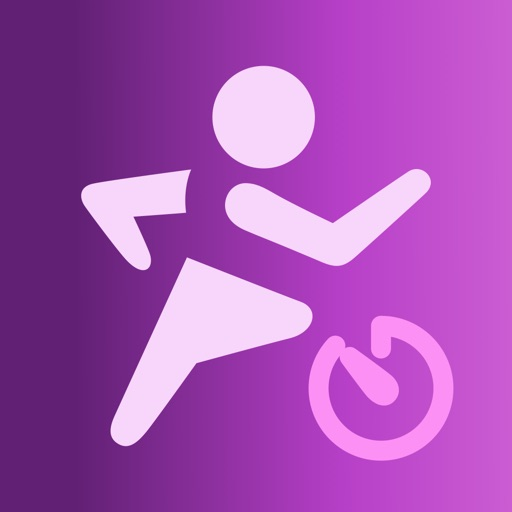
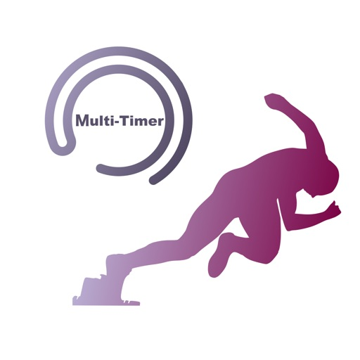
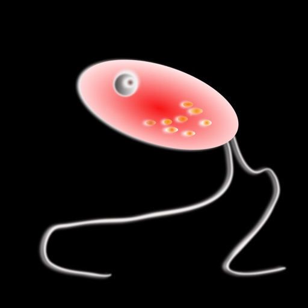

ヘルスケア / フィットネス
Multi-Timer
複数のストップウォッチやタイマーを同時に扱える計測アプリです。陸上・水泳のマネージャーやコーチだけでなく、レース運営、ゲーム、ビジネス現場など、複数対象の時間管理に利用されています。
累計15.8万DL 2026年9月20日現在
ABOUT
長田 公喜（Koki Osada）は、iOSアプリの企画・開発・運営を行う個人開発者です。東北大学卒業後、医師として大学病院に勤務。2018年頃から多くのiOSアプリ開発に携わり、現在は医療機器ソフトウェア（SaMD）を含むiOSアプリの開発も行っています。個人開発では、医療現場の課題、ランナーとして競技現場で欲しかった道具、日々の気づきをアプリに落とし込んでいます。
APPS
ヘルスケア / フィットネス
複数のストップウォッチやタイマーを同時に扱える計測アプリです。陸上・水泳のマネージャーやコーチだけでなく、レース運営、ゲーム、ビジネス現場など、複数対象の時間管理に利用されています。
累計15.8万DL 2026年9月20日現在
スポーツ
陸上競技のスタート練習を手軽に行うためのアプリです。練習環境を大がかりにしなくても、号砲に近い体験を用意できるように設計しています。
累計2.1万DL 2026年9月20日現在
AI / 語学学習
設定した時間帯にAIから電話がかかってくる語学学習アプリです。電話に出るだけで会話が始まり、通話後には会話の要約や学習アドバイスを確認できます。英語、日本語、韓国語、中国語、スペイン語、フランス語、ドイツ語の7言語に対応しています。
ライフスタイル
今年やりたい100のことを書き出し、進捗や達成を見える化するアプリです。ひとりでの記録に加え、友人、カップル、グループで目標を共有し、一緒に達成を目指せます。
スポーツ
2台のiPhoneをスタート地点とゴール地点に置き、スタート音と高フレームレート動画を連携する計測アプリです。陸上や水泳の練習で、ゴールをコマ送り確認できます。
教育
英会話の練習を、より自然な対話の反復として続けるためのアプリです。言語学習を「開いて、少し話して、また戻れる」軽い体験に寄せています。

スポーツ
動画を見ながらゴールの瞬間を確認し、短距離走やタイムトライアルのタイム判定を補助するアプリです。スマホだけで写真判定に近い確認体験を用意します。

仕事効率化
Multi-Timer の思想を複数端末の連携に広げたアプリです。現場の計測を一人の手元だけに閉じず、チームや複数デバイスで扱うための実験でもあります。

教育
感染症法指定疾患を、単なる暗記ではなく繰り返し触れながら覚えるための学習アプリです。医療学習とゲーム感覚を近づける試みとして開発しました。
STORY
ランナーとして練習や記録会に関わる中で、タイム計測やスタート練習には小さな手間が多いと感じていました。Multi-Timer、スターターキット、SprintLensは、その現場感から生まれたアプリです。
大学病院で医師として勤務しながら、医療機器ソフトウェア（SaMD）を含むiOSアプリ開発にも携わっています。個人開発のPathogen Inputでは、医療学習の負荷を少しでも軽くする体験を目指しました。
個人開発では、完璧な初版よりも、使われ方を見ながら直し続けることを大事にしています。DL数の伸びやレビューは、次に直すべき場所を教えてくれる大切な信号です。
POLICY
CONTACT
アプリの不具合報告、競技現場での使い方の相談、共同開発の相談などがあればご連絡ください。